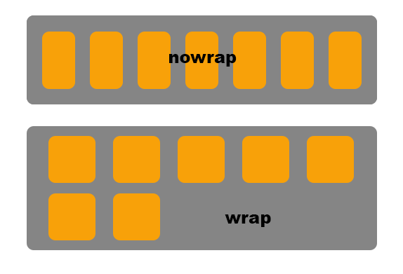

Basic Layout
Position
When looking at a website, it is pretty obvious that every element has
its own position on the screen. But what isn’t as clear is that every
element can have one of many different “types” of positions.
Before delving into the different types of positions, it should be noted
what top, bottom,
left, and right do.
Each property affects the position given their direction, by the
specified amount. Something like
top: 50px would set the top edge of the
element 50px down from its nearest positioned ancestor.
position: static
Without knowing that there are different types of positions, most
would assume that every position is of
static type. And that is for good reason. It
is by far the most common position value seen on a website, and it is
also the default for every HTML element. A static position is when an
element is positioned according to the normal flow of the document.
The text you are reading right now is of type
static. It also should be noted that
top, bottom,
left, and right do
not affect static elements, but do work on all other position types.
position: relative
The next type of position is relative.
Relative elements are offset a given amount from their normal
position, but the offset does not affect other elements. For example,
applying top: 50px, will position the
element 50px from the top edge (aka 50px down) of its nearest
positioned ancestor. But, it will not offset its surrounding elements.
The element of focus is offset relative to itself.
position: absolute
Both relative and
static elements remain in the normal flow of
the document, because the surrounding elements are aware of the
elements position. On the other hand, items of type
absolute are taken out of the flow. The
surrounding elements of an absolutely positioned element act as if it
does not exist. Applying top and left to an absolutely positioned
element will be positioned down and right relative to its nearest
non-static ancestor.
position: fixed
Like absolute positioning,
fixed elements are also removed from the
normal flow of the document. The difference is, that instead of being
positioned by its ancestor, it is positioned relative to the initial
containing block established by the viewport. So the dimensions will
change based on the browser size. Applying top and left would position
the element down and right
position: sticky
The sticky value for positioning can be
thought of as a hybrid of relative and
fixed positioning. This kind of element will
be treated as a relative element while it remains in the viewport
(browser screen), but once it reaches a certain threshold when
scrolling away, it will become a fixed element. For example, applying
top: 50px
will make the element 50px from the top edge, but once the user
scrolls enough where the sticky element would be less than 50px from
the top of the screen, it becomes fixed and sticks to the top.
Display
In addition to different types of positions, each element also has
different ways they can be displayed. And to do this, we can use the
display property in order to specify the display behavior.
display: block
A block level element will always start on a
new line and it will take up the full available width (stretches
horizontally as much as it can). For an example, if you have a
bordered text box that is a block-level element, it will of course be
on a new line, and even if the text inside does not take up the whole
width, the textbox will stretch horizontally as much as it can.
Visually, the border will surround the text and whitespace after the
text. Here are some block-level elements that should be familiar:
<div>,
<h1>, <p>,
<form>,
<header>,
<footer>, and
<section>.
display: inline
An inline element is the opposite of a block
element. It does not start on a new line, and it only takes as much
width as necessary. Using the bordered text box example, the text
inside an inline element will only take as much width as it needs, and
the border will not contain any unnecessary white space. Here are some
inline elements that should be familiar:
<span>,
<a>, and
<img>.
display: inline-block
As one may expect, inline-block is a
combination of both inline and
block. The difference between inline-block
and inline is that you are able to set the top and bottom
margins/paddings, width, and height to an element with inline-block.
With inline, all of these properties are ignored, because recall that
it only uses as much as space needed. The difference from block is
that inline-block elements do not cause line breaks, so you can have
multiple elements next to each other on the same line.
That was a brief overview of the basic layout properties in CSS. When
making a website, these properties can be very useful when you want to
position a few elements a certain way, but when working with a lot of
elements, it is more efficient to use the advanced layouts which we will
go over next.
Flexbox
The first advanced layout model we will go over is flexbox. Flexbox is a
powerful one-dimensional layout model that allows for space distribution
between items in an interface and powerful alignment capabilities.
Before getting into the flexbox properties, it is important to know that
some properties are for flex containers and some are for flex items. As
a refresher, a container is something like the
<div> tag where it doesn’t have any
immediate effect visually, but it allows you to put other items inside
of it. So, the idea of flexbox is to have a flex container consisting of
many flex items. Properties on the container will have an effect on all
of the items as a whole, while properties on an item will change the
specified item individually.
Container
The following properties will be pertaining to the flex container rather
than flex items.
display: flex
The flex property simply enables flex
content for the container, and all of its direct children. Without
doing this first, using the flex properties we will learn later will
have no effect on the layout.
flex-direction: <value>
The flex-direction property is the most
fundamental part of flexbox, and it is really important to understand
how it works. And luckily, it is very easy! Flex-direction establishes
the main axis, or in other words, the direction that flex items are
placed in the container. Flexbox, again, is a one-dimensional layout
model, so there has to be a primary direction that the items will
have.
It can take the following values:
| row |
Items are placed from left to right |
| row-reverse |
Items are placed from right to left |
| column |
Items are placed from top to bottom |
| column-reverse |
Items are placed from bottom to top |
Highlight denotes default value

flex-wrap: <value>
If you know how text-wrapping works,
flex-wrap is the same idea. But for those
who don’t, flex-wrap defines how the flex
items behave when there are too many items on one line.
| nowrap |
All of the flex items will try to fit on one line, even if it has
to squish them
|
| wrap |
When there is not enough room for the next flex item, it will
start a new line and continue placing the flex items as so
|
| wrap-reverse |
Same idea as wrap, but it will create a new line on top of the
current one, so that the items will wrap in the reverse order
|
Highlight denotes default value

flex-flow: [direction] [wrap]
The flex-flow property is simply a shorthand
for flex-direction and flex-wrap. So for an example, instead of doing
flex-direction: column and flex-wrap: wrap, it can be reduced to
flex-flow: column wrap. The default value for flex-flow is
row nowrap.
-
We will first work with index.html, so open
it in any browser
-
Open masonry.css in a text editor of your
choice, and we will be adding to the
.image-grid class
.image-grid {
max-height: 800px;
display: flex;
flex-direction: column;
flex-wrap: wrap;
}
Remember that flex-flow is a shorthand for
flex-direction and
flex-wrap, so try condensing the code!
-
Your pictures should now be formatted similarly to this:
Note that the space between images will vary per person (for now).
justify-content: <value>
We stated before that flex-direction is very important in
understanding flexbox, and properties like
justify-content is the reason why.
Justify-content defines the alignment along the main axis (defined by
flex-direction) and determines the behavior when there is leftover
space. There are many values for this property, but we will only be
going over the most common ones. We do encourage you to check out the
flexbox documentation to see all of the properties.
| flex-start |
All of the items are packed towards the start of the
flex-direction
|
| flex-end |
All of the items are toward the end of the flex-direction center
is where all of the items are centered along the axis
|
| space-between |
First and last item are touching the edges, and the rest of the
items are evenly distributed
|
| space-around |
Each item has equal space around itself; the first and last item
will have only have one unit of space against the edge, while the
space between two items have two units of space
|
| space-evenly |
Same as space-around, except the first and last item also have two
units of space against the edge
|
Highlight denotes default value
align-items: <value>
The justify-content property defines how
items are laid out along the main axis defined by flex-direction. So
we can think of align-items as justify-content, but perpendicular to
the main-axis (known as the cross-axis). Again, we are only going over
the most common values, but if you are interested in knowing all of
them, strongly encourage reading the documents (which can be found
from a quick google search).
| stretch |
Stretch to fill the container (while respecting
min-width/max-width values)
|
| flex-start |
Place items at the start of the cross-axis |
| flex-end |
Place items at the end of the cross-axis |
| center |
Center the items along the cross-axis |
| baseline |
Align the items so that the content inside each flex item is
centered along the cross-axis
|
Highlight denotes default value
align-content: <vlaue>
Justify-content can align the flex items along the main-axis when
there is extra space, and similarly,
align-content aligns the flex containers
lines when there is extra space in the cross-axis. It should be noted
that this property has no effect if there is only one line of flex
items.
| stretch |
Lines stretch to fill the remaining space |
| flex-start |
Packs all of the items to the start of the container along the
cross-axis
|
| flex-end |
Packs all of the items to the end of the container along the
cross-axis
|
| center |
All of the items centered along the cross-axis |
| space-between |
Evenly distributes the space between each line where the first and
last line are touching the container edge
|
| space-around |
Evenly distributes the the space between each line; the first and
last line have one unit of space against the edge, while each line
has two units of space between
|
| space-evenly |
Same as space-around, except the first and last line also have two
units of space against the edge
|
Highlight denotes default value
-
We will be adding onto the class .image-grid
.image-grid {
max-height: 800px;
display: flex;
flex-flow: column wrap;
align-content: center;
align-items: center;
}
-
The website should now look something like this:
The big thing to note is that there are no longer gaps between the
pictures.
-
Now lets change how the social media bar appears by adding to
.icon-bar
.image-grid {
max-height: 800px;
display: flex;
flex-flow: column wrap;
align-content: center;
align-items: center;
}
-
The icon bar should now be centered above the copyright footer.
Item
The following properties are now pertaining to flex items rather than
the container.
order: [num]
Flex items are laid out in the source order by default, but using the
order property, you can manually change the
order in how they appear. It is important to note that the default
order is 0, so setting one flex item to order: 1 will make it the last
item because the rest of the orders are of value 0. To make it the
first item, you can either do something like order: -1, or by manually
putting in the order for the rest of the items.
flex-grow: [num]
The property flex-grow defines the ability
for a flex item to grow if needed. It takes a non-negative number that
serves as a proportion, which dictates how much of the available space
inside the flex container the item should take up. The default value
is 0, so if you only define flex-grow for one item, since the other
items have a value of 0, that item will take as much space as it can.
Another example is that if all flex items have a value of 1 result in
the remaining space being distributed evenly. But if one is changed to
2, then that item will try to take twice as much space compared to the
others.
flex-shrink: [num]
The flex-shrink is identical to flex-grow,
but instead affects how the item shrinks if needed.
flex-basis: auto | [length]
The flex-basis property sets the default
size of an element before the remaining space can be distributed. The
default value is auto, which means to refer to the width or height
property. Otherwise, you can set the default size to a length value
(%, em, etc.). It should be noted that if set to 0, the extra space
around the content is not factored, while if it is set to auto, then
the distributed space is based on the flex-grow value.
flex: grow (shrink) (basis)
The flex property is a shorthand for
flex-grow, flex-shrink, and flex-basis. If given one value, it sets
the value for flex-grow, while flex-shrink and flex-basis are set to
their default value. If given two values, then the first value is set
to flex-grow, and if the second value is a number, then it is assigned
to flex-shrink, while if it is a width, it is assigned to flex-basis.
And if given three values, it is assigned to flex-grow, flex-shrink,
and flex-basis respectively.
align-self: auto | flex-start | flex-end | center | baseline | stretch
The align-self property allows for an
individual flex item to have a specific alignment. Align-self will
override the default alignment (or the alignment from align-items).
The values for this property are identical to the ones from
align-items, but instead it only affects one item.
-
As of now, our masonry collage has a pattern, so now lets change the
order
.image-23 {
order: -1;
}
.image-24 {
order: -2;
}
Note that these two classes were pre-named in
index.html. If you want to move different
images, feel free to change the class names inside the html file.
-
The pictures are now more collage-like, and the website is finished!
Grid
The second advanced layout model we will go over is
grid. Grid, like flexbox, allows for powerful
alignment and spacing capabilities, but it is a two-dimensional system.
If you remember from flexbox, everything we did before was based on a
singular direction, but with grid, we will have control over both the
rows and columns.
Recall that with flexbox, most properties are applied to a container
(such as <div>), and the same applies for grid.
Container
The following properties will be pertaining to the grid container rather
than grid items.
display: grid
This property defines its element as a grid container, allowing for
other grid properties to be applied. Without defining the display
property, the other flex properties will have no effect.
grid-template-columns: [size] ...
grid-template-rows: [size] ...
These two properties,
grid-template-columns and
grid-template-rows, create the foundation of
the grid layout. They define both the amount of rows/columns and the
size. To do this, you simply list values, separated by spaces. Each
value should specify the size of the row/column, and the number of
space separated values denotes how many rows/columns are in the grid.
To make it more clear, we will go over some examples.
grid-template-columns: 20px 30px auto 10px
grid-template-rows: 25% 35px
These properties result in a grid with 4 columns and 2 rows (2x4
grid), with their respective track (row/column) sizes.
grid-template-columns: 1fr 1fr 1fr 1fr
With the first example, it is likely that none of the units were
unfamiliar, but the fr unit may be something you haven’t seen before.
The fr unit sets the track size as a fraction relative to the free
space left in the grid container. So with this example, each column is
one fourth of the grid container width.
grid-template-columns: 1fr 50px 2fr 1fr
When using fr, the amount of free space is applied after non-flexible
items. So, first column 2 will take up 50px, and now it will calculate
the free space. The free space being the grid container width minus
50px, and the first and fourth column each take one fourth of the free
space, while the third column will take up half.
It should also be noted that when creating a grid, names are assigned
to the row and column lines. For an example, if we go back to the
example where we created four columns, the columns are numbered from 1
to 4 respectively. Each line also has an alternative name, where the
last line is named -1, and continues to go further into the negative
(fourth line numbered -1 and first is -4 in our example).
Although there is an automatic naming convention, it can be useful to
explicitly name the lines. This can be done by putting the name in
brackets before the track size value. For an example:
grid-template-columns: [c1-start] 20px [c1-end c2-start] 30px [line3] auto [line4] 10px [line5]
A few things to note here: First being that there are five different
brackets in a grid with four columns. This is because the names are
tied to the lines, so there will always be one more line than a track.
Second is that in [c1-end c2-start] it follows the standard html
naming convention where you can have multiple names by separating the
names with a space.
Naming lines can be useful when needing to redefine the grid. Instead
of needing to redefine the positions by changing the line number, by
explicitly naming the line you will always know what the name refers
to unless you decide to explicitly change it again. Many times though,
the automated names are sufficient enough.
-
We are first going to initialize the grid to have four columns using
grid-template-columns.
-
Open grid.css and we will be working in the
.image-grid class
.image-grid {
/* setting up grid container */
margin: 0 auto;
padding: 20px;
border: 2px solid black;
width: 1300px; /* increase width if the grid is too small! */
/* grid properties */
display: grid;
grid-template-columns: 280px 280px 280px 280px; /* feel free to change sizes as well */
}
-
The photos should now be formatted similarly to this:
-
Note how the height is disproportionately large, and this is because
we have not defined the size of the grid-rows. Now lets define a bunch
of rows with a set size so that the images are formatted using
grid-template-rows.
.image-grid {
/* setting up grid container */
margin: 0 auto;
padding: 20px;
border: 2px solid black;
width: 1300px; /* increase width if the grid is too small! */
/* grid properties */
display: grid;
grid-template-columns: 280px 280px 280px 280px; /* feel free to change sizes as well */
grid-template-rows: repeat(10, 200px) /* repeats the "200px" value 10 times, initializing 10 rows */
}
-
The photos should now be formatted similarly to this:
There is going to be a lot of extra space at the bottom, but that is
okay! We will address this later.
grid-template-areas: ... | ...
Using grid-template-rows and grid-template-columns is not the only way
to define a grid template. The property
grid-template-areas defines a grid template
by naming grid areas; Grid areas simply being a smaller grid inside of
the template. There is a lot of flexibility when creating a template
area, so we will go over an example to make it more clear.
grid-template-areas:
“head head head side”
“main main .... side”
“foot foot foot side”
It creates a grid with three rows and four columns, with each cell
having their respective name. An empty cell is denoted by any number
of periods, given there are no spaces between. Multiple periods are
helpful to align the code how it looks visually
Another thing to note that each row needs to have the same number of
cells, and that the names represent the areas. These names become useful
when wanting to adjust specific areas, which we will go over in the grid
item properties. If you want to reference the lines at the end of the
areas, you can do this with area-name-start and area-name-end.
grid-template: none | <grid-template-rows> / <grid-template-columns>
If you were wondering if there is a shorthand for the previous
grid-template properties we have gone over, this is it. The
grid-template property can combine both the
template-rows and columns in one property, and even include
grid-template-areas to have all three. Setting the value to none
simply sets all three properties to their initial values, so nothing
too interesting. Including both grid-template-rows and
grid-template-columns, on the other hand, is a lot more useful. It is
necessary to separate the rows and columns values with a forward
slash, so be careful about that. Using all three properties is a
little more complicated, so I will include an example to make it
easier to understand.
grid-template:
[r1-start] “head head head” 50px [r1-end]
[r2-start] “main main side” 50px [r2-end]
/ 30 30 auto
This shorthand is equivalent to this block of code
grid-template-rows: [r1-start] 50px [r1-end r2-start] 50px [r2-end]
grid-template-columns: 30 30 auto
grid-template-areas:
“head head head”
“main main side”
By comparing the two blocks of code, you can see how grid-template
cleverly includes all three properties into one.
column-gap: <line-size>
row-gap: <line-size>
In the previous properties, we have gone over how to explicitly name
grid lines, but now we will go over how to change how they look
visually. Both the column-gap and
row-gap property allows us to change the
size of the respective lines. Of course, you cannot actually see the
grid lines, but you will be able to see the spacing between the grid
items. This property is useful when the items in the grid feel too
cramped, and require some spacing. Note that this property only
affects the gaps between the columns/rows. The outer edges (think
margin) will not change with this property.
gap: <row-gap> <column-gap>
It would only make sense to have a shorthand property for column-gap
and row-gap. The gap property achieves this
by making this into one line with a space separation. If only one
value is specified, both row and column are set to that value.
-
Lets now add space between our pictures using the
gap property.
.image-grid {
/* setting up grid container */
margin: 0 auto;
padding: 20px;
border: 2px solid black;
width: 1300px; /* increase width if the grid is too small! */
/* grid properties */
display: grid;
grid-template-columns: 280px 280px 280px 280px; /* feel free to change sizes as well */
grid-template-rows: repeat(10, 200px); /* repeats the "200px" value 10 times, initializing 10 rows */
column-gap: 20px;
row-gap: 20px;
}
Remember that gap is a shorthand for
row-gap and
column-gap, so try condensing the code!
-
The pictures should now look like this:
The old version of the gap property required a prefix of grid (Ex.
grid-column-gap). And while most browsers allow you to omit the prefix,
there is a chance that you may run into a situation where it is
required.
justify-items: <value>
The justify-items property aligns all grid
items along the inline/row axis.
| stretch |
Stretches items to the whole width of the cell |
| start |
Aligns items to the start edge of the cell |
| end |
Aligns items to the end edge of the cell |
| center |
Aligns items in the center of the cell |
Highlight denotes default value
align-items: <value>
The align-items property aligns all grid
items along the block/column axis.
| stretch |
Stretches items to the whole height of the cell |
| start |
Aligns items to the start edge of the cell |
| end |
Aligns items to the end edge of the cell |
| center |
Aligns items in the center of the cell |
Highlight denotes default value
place-items: <align-items> / <justify-items>
The place-items property is a shorthand for
justify-items and align-items by separating the values by a forward
slash. If it is just one value, then both align and justify are set to
that value.
-
We want our pictures to take up all of the space in each cell, and
this can be done by setting
justify-items and
align-items to
stretch.
.image-grid {
/* setting up grid container */
margin: 0 auto;
padding: 20px;
border: 2px solid black;
width: 1300px; /* increase width if the grid is too small! */
/* grid properties */
display: grid;
grid-template-columns: 280px 280px 280px 280px; /* feel free to change sizes as well */
grid-template-rows: repeat(10, 200px); /* repeats the "200px" value 10 times, initializing 10 rows */
column-gap: 20px;
row-gap: 20px;
justify-items: stretch;
align-items: stretch;
}
Try using the place-items property!
- Our website should now look similar to this:
justify-content: <value>
It is possible for the grid to be smaller than the grid container, and
this could happen due to grid items being in pixels for an example. If
this is the case, the
justify-content property allows us to
position the grid (all items as a collective) in the grid container.
This property aligns the grid along the inline/row axis.
| stretch |
Resizes the grid items so the grid stretches to the whole width of
the container
|
| start |
Aligns the grid to the start edge of the container |
| end |
Aligns the grid to the end edge of the container |
| center |
Aligns the grid in the center of the container |
| space-around |
Places an even amount of space between each grid item, with
half-sized spaces on the far ends
|
| space-between |
Places an even amount of space between each grid item, with no
space at the far ends
|
| space-evenly |
places an even amount of space between each grid item, including
the far ends
|
Highlight denotes default value
align-content: <value>
The align-content property has the exact
same concept as justify-content, but it aligns the grid along the
block/column axis.
| stretch |
Resizes the grid items so the grid stretches to the whole height
of the container
|
| start |
Aligns the grid to the start edge of the container |
| end |
Aligns the grid to the end edge of the container |
| center |
Aligns the grid in the center of the container |
| space-around |
Places an even amount of space between each grid item, with
half-sized spaces on the far ends
|
| space-between |
Places an even amount of space between each grid item, with no
space at the far ends
|
| space-evenly |
Places an even amount of space between each grid item, including
the far ends
|
Highlight denotes default value
place-content: <align-content> / <justify-content>
You were probably expecting another shorthand after we introduced
justify-content and align-content, and you would be correct. We can
use the place-content property to set both
properties at once by separating them with a forward slash. And again,
if only one value is given, it is applied to both align and justify.
-
We now want to horizontally align our images while keeping them at the
top of the container. We can do this by setting the
content.
.image-grid {
/* setting up grid container */
margin: 0 auto;
padding: 20px;
border: 2px solid black;
width: 1300px; /* increase width if the grid is too small! */
/* grid properties */
display: grid;
grid-template-columns: 280px 280px 280px 280px; /* feel free to change sizes as well */
grid-template-rows: repeat(10, 200px); /* repeats the "200px" value 10 times, initializing 10 rows */
column-gap: 20px;
row-gap: 20px;
justify-items: stretch;
align-items: stretch;
justify-content: center;
align-content: start;
}
Try using the place-content property!
-
Our website should now look like this:
grid-auto-columns: <track-size>
grid-auto-rows: <track-size>
As the name suggests, the
grid-auto-columns and
grid-auto-rows property sets the size of
auto generated tracks. To give some insight on how auto tracks are
made, we will later go over a grid item property which can specify
what row/column it spans on. If that specified cell is out of the
range made from the grid-template, then auto generated tracks are
created. For an example, if we have a template of a 2x2 grid, but we
set an item to be in row 2, column 4, two extra columns will be
created. The fourth column’s size will automatically be set depending
on the grid item, but what happens to the third column? It actually
has a width of 0 by default, so visually it does not even appear to
exist. With these properties we are able to change that 0 value into a
value we specify.
-
We are finally going to fix the extra space! We can do this by
deleting our grid-template-rows property,
and replacing it with grid-auto-rows. This
way, regardless of how many images we have, CSS will always know to
keep making rows of the desired size.
.image-grid {
/* setting up grid container */
margin: 0 auto;
padding: 20px;
border: 2px solid black;
width: 1300px; /* increase width if the grid is too small! */
/* grid properties */
display: grid;
grid-template-columns: 280px 280px 280px 280px; /* feel free to change sizes as well */
grid-auto-rows: 200px; /* REPLACED CODE HERE */
column-gap: 20px;
row-gap: 20px;
justify-items: stretch;
align-items: stretch;
justify-content: center;
align-content: start;
}
-
Our website should now look like this:
Note how we have eliminated the extra rows at the bottom.
grid-auto-flow: <value>
If you remember the flex-direction property from the flexbox section
(you should, because it was very important!),
grid-auto-flow is very similar. A powerful
feature about grid is that you can explicitly set the location of an
item on the grid, which we will go over later, but it is not required.
And if the location is not explicitly set, the grid-auto-flow property
determines where the item will be placed.
| row |
Fills in each row, and adds a new row when the current one is full
|
| column |
Fills in each column, and adds a new column when the current one
is full
|
| dense |
Prioritizes filling in holes earlier in the grid if smaller items
appear
|
Highlight denotes default value
grid: ...
The grid property is an extremely useful
shorthand which combines grid-template-rows, grid-template-columns,
grid-template-areas, grid-auto-rows, grid-auto-columns, and
grid-auto-flow in one property. Note that you have to choose either
explicit or implicit grid properties in a single declaration. Although
it is very useful, we will not be going over it just because it takes
a bit to get used to, and there is a lot of other material to go over.
So I would highly encourage to look at the css documentations for more
information on the grid property.
Item
The following properties are now pertaining to grid items rather than
the container.
grid-column-start: <value>
grid-column-end: <value>
grid-row-start: <value>
grid-row-end: <value>
With these properties, we are able to explicitly define where the grid
item is placed. The grid-column-start and
grid-row-start property define what line
where the item begins, while
grid-column-end and
grid-row-end
define what line the item ends at. Extra emphasis that they are
defined by the grid lines, so an item defined with grid-column-start:
2 and grid-column-end: 4 will take up the second and third column
because it lies between the second and fourth grid line.
| <number> |
line number |
| <name> |
line name |
| span <number> |
the item will span across the the provided number of grid tracks
|
| span <name> |
the item will span across until it reaches the line with the
provided name
|
| auto |
auto-placement, automatic span, or default span of one |
grid-column: <start> / <end>
grid-row: <start> / <end>
These properties are a shorthand for
grid-column-start +
grid-column-end, and
grid-row-start +
grid-row-end, respectively. The start and
end are separated by a forward slash, and if no end value is
specified, it will span 1 track as default.
grid-area: <value>
Recall that there were two ways to define a grid template,
grid-template-areas and grid-template-rows/columns. So depending on
how you set up your template (note that you can use both ways
simultaneously), the way you use the
grid-area property may vary.
| name |
assigns an area from grid-template-areas to the grid item |
|
<row-start> / <column-start> / <row-end> /
<column-end>
|
shorthand property to reduce grid item start and end even further
|
-
We will now be working in image-pan. This
class is the first image in our grid, and it is named pan because it
was orignally a panorama, but it has been clipped in order to fit in
the cell. Now lets define this image to take up all four columns.
-
In order to do this, we must first make a small change in our
grid-image class. Simply remove the
max-width" line. This property was here
because the images are very large, so initially it would be a big
cluster, but now it is not needed since we have defined our grid.
.grid-image {
/* removed max-width */
max-height: 200px;
object-fit: cover;
}
-
Now we can define the location of image-pan
.image-pan {
grid-column: 1 / span 4;
grid-row: 7 / 8;
}
Try using the grid-area property!
-
Our website should now look like this:
justify-self: <value>
The justify-self property aligns the item in
its cell along the inline/row axis.
| stretch |
Fills whole width of cell |
| start |
Aligns item to start edge of cell |
| end |
Aligns item to end edge of cell |
| center |
Aligns item to center of cell |
Highlight denotes default value
align-self: <value>
The align-self property aligns the item in
its cell along the block/column axis.
| stretch |
Fills whole height of cell |
| start |
Aligns item to start edge of cell |
| end |
Aligns item to end edge of cell |
| center |
Aligns item to center of cell |
Highlight denotes default value
place-self: <value>
The place-self property is a shorthand
property for align-self and
justify-self.
| auto |
Sets default alignment for the layout |
| <align-self> / <justify-self> |
Allows for the two properties to be defined in one line by
separating them with a forward slash; and if there is only one
value given, both align and justify are set to that value
|
We can finish the website by removing the guidance border in image-grid:
.image-grid {
/* setting up grid container */
margin: 0 auto;
padding: 20px;
/* removed border */
width: 1300px; /* increase width if the grid is too small! */
}
And now the website is finished!